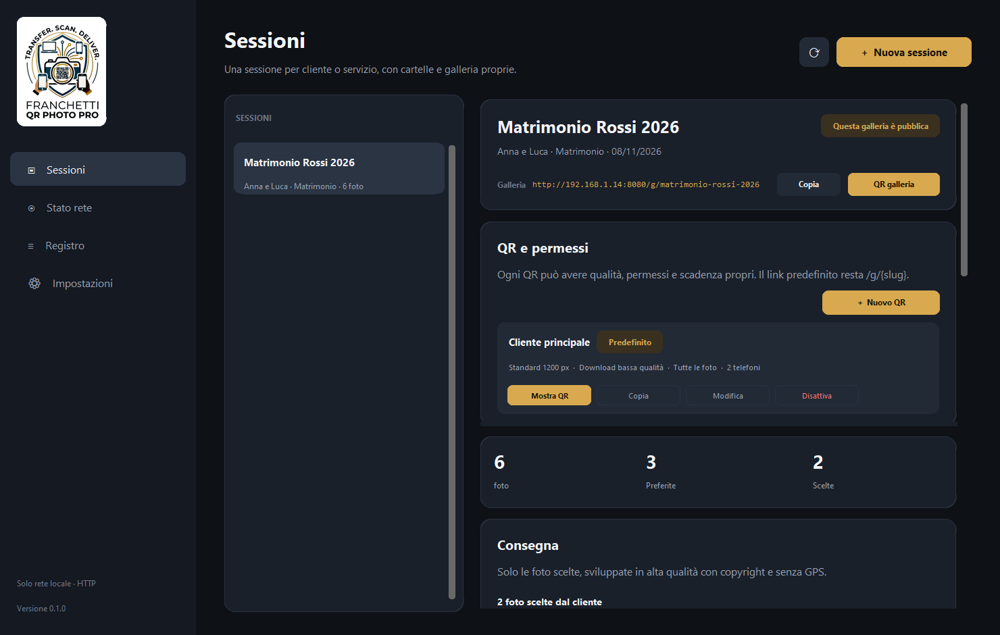
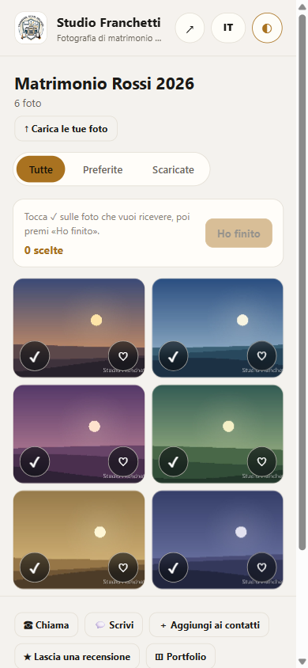
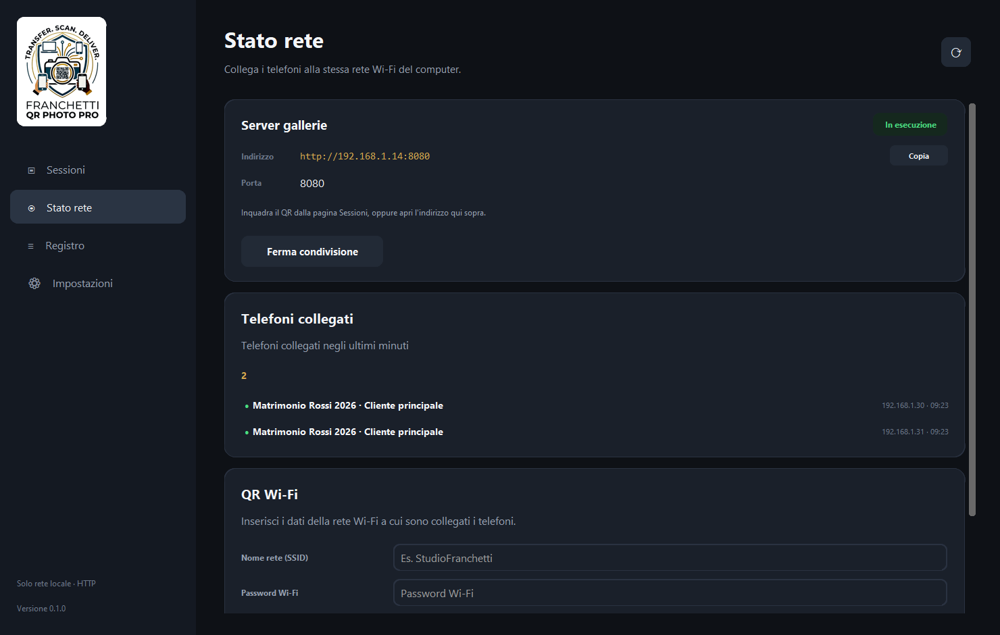
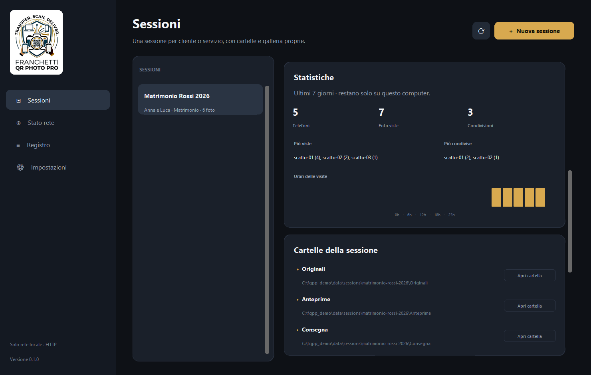
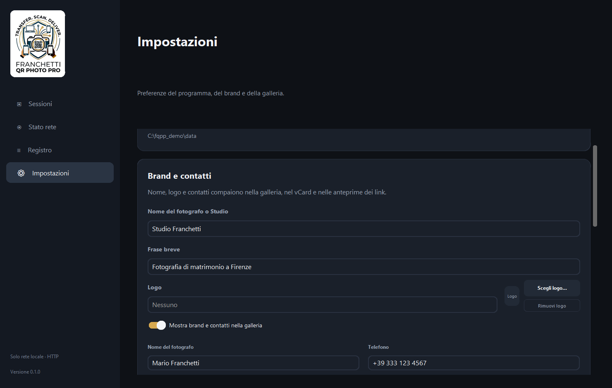

Importa
Scheda di memoria, cartella monitorata, FTP Wi-Fi dalla fotocamera o upload dal telefono.
Galleria QR locale per fotografi
Il cliente inquadra un QR, sceglie le sue preferite e tu consegni solo quelle. Tutto sul tuo PC: nessun account, nessun abbonamento, originali intatti.

Come funziona
Scheda di memoria, cartella monitorata, FTP Wi-Fi dalla fotocamera o upload dal telefono.
Anteprime con watermark e galleria sulla rete locale. Il cliente inquadra un QR e apre le foto sul telefono.
Cuori, note e scelte in diretta. Sviluppi e consegni solo le foto richieste, con copyright e senza GPS.
Funzioni
Scheda di memoria, cartella monitorata, FTP Wi-Fi e upload da telefono.
Abbinamento automatico per nome e ora di scatto, anche se i file arrivano in momenti diversi.
Dal JPEG quando c'è, altrimenti dall'anteprima incorporata nel RAW. Watermark e orientamento EXIF.
Qualità, sola vista, download a bassa o alta qualità, originale, scadenza e revoca.
Cuori, note e richieste di ritocco arrivano al PC in tempo reale, senza ricaricare.
Solo le foto scelte, sviluppate dal RAW, con copyright nei metadati e GPS rimosso.
La galleria del cliente
Leggera e veloce anche con rete debole. Funziona su Safari iOS e Chrome Android, senza app da scaricare.

Privacy
Nessun cloud obbligatorio, nessun account, nessuna telemetria. Il programma mette in contatto il tuo PC e i telefoni dei clienti sulla rete locale, e nient'altro.
La galleria usa HTTP locale: usala su una rete fidata, non su Wi-Fi pubblici o aperti.
Dentro il programma



Disponibilità
La pubblicazione è in corso. Appena Microsoft approva l'app, qui compare il pulsante per installarla.
Windows 10/11 a 64 bit · circa 44 MB · nessun account